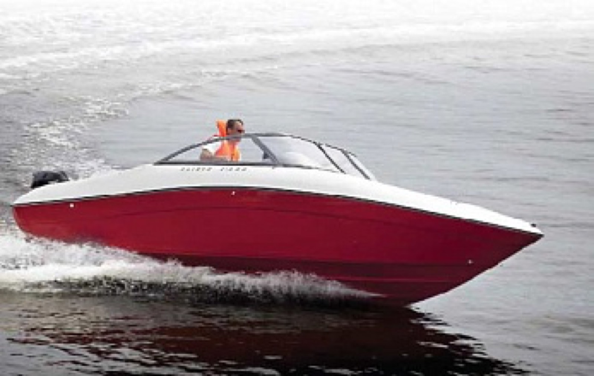

Три модели
«Катера и Яхты» № 5 (239), сентябрь–октябрь 2012 · Андрей Чернавин
«Катера Slider: стиль, дизайн, уверенность»
77км/чSlider 210
175 л.с.
175 л.с.
74км/чSlider 210 BR
150 л.с.
150 л.с.
68км/чSlider 175
90 л.с.
90 л.с.
«Старт и выход на глиссирование у всех трех катеров ровные, без экстремальных «кобр»»Читать тест · PDF
Тест катеров модельного года 2012.